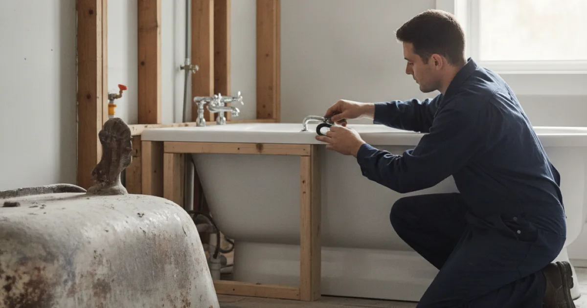

Bathtub Installation in Westchester County, NY
Getting a tub out of a finished bathroom, and a new one in, is more about access and the drain connection than the tub itself. Here is what actually decides the job.
- Licensed & Insured
- Upfront Pricing
- Clean, Respectful Technicians
- 15+ Years of Experience

Access is most of the job
A tub is heavy and awkward, and in a finished bathroom the real work is often getting the old one out and the new one in without wrecking the room around it.
Old cast iron tubs are the extreme case — they can weigh several hundred pounds, and getting one down a staircase whole is sometimes not realistic. They are frequently broken up in place instead, which is noisy and messy but far safer than trying to carry one intact.
Access also decides how the drain gets connected. A tub drain connects underneath, so we need to reach below it — through an access panel, from a basement ceiling, or by opening a small section. Where a bathroom has no access to the tub’s underside, creating one is part of the job, and a small access panel left behind saves the next person opening a wall.
Replacing a tub?
Access and drainage decide the job. Let us take a look first.
The waste and overflow nobody thinks about
The waste and overflow assembly is the plumbing that makes a tub hold water and drain it, and it is where a badly done tub install leaks.
The overflow — the fitting near the top that stops the tub flooding — has a gasket behind it that has to seal against the tub. Done poorly, it weeps a little every time the tub fills above that point, and because it drips behind and below the tub, nobody sees it until the ceiling underneath stains. The drain shoe at the bottom has the same requirement.
This is the reason we test a new tub by filling it and letting it sit, not just by running the tap for a moment. A slow overflow leak only shows when the water is actually above the overflow, which a quick test never reaches.
Tub types and what each needs
- Alcove tubs — the standard three-wall recess. Straightforward, provided the new one matches the opening and the drain lines up.
- Drop-in tubs sit in a built frame or deck, which is carpentry as much as plumbing, and the deck has to be built to suit.
- Freestanding tubs look simple but often need the supply and drain brought up through the floor in an exact spot, so the rough-in has to be precise and planned early.
- Cast iron and stone tubs bring the weight problem above — the floor structure sometimes needs checking to carry a heavy tub full of water and a person.
If you are choosing between a tub and a walk-in shower in the same space, that decision affects the drain position, and it is worth taking alongside shower installation instead before either is ordered. If resale is on your mind, Consumer Reports has a level-headed look at the tub-versus-shower trade-off worth reading before you commit.
A tub is one part of our other bathroom plumbing work, and it frequently goes in as part of a wider bathroom project rather than on its own.
Common questions
Can you get my old cast iron tub out?
Yes. Often the practical way is to break it up in place rather than carry it out whole — it is heavy enough that this is safer for the tub’s surroundings and for everyone involved. Noisy for a while, but effective.
Do you supply the tub or do I?
Either. If you are choosing it, check it fits the opening and the drain position before buying, especially for freestanding and drop-in styles, which are less forgiving than a standard alcove tub.
Will you need to open a wall or ceiling?
Sometimes, to reach the drain and overflow connections. We keep it to the minimum, and where sensible we leave an access panel so the next job does not need to open anything at all.
My tub drains slowly. New tub, or is it the drain?
Usually the drain or the branch line rather than the tub. A new tub on a partly blocked line will drain just as slowly, so it is worth clearing the line rather than assuming the tub is the fix.
Can my floor take a heavy tub?
Most can, but a large cast iron or stone tub full of water is a real load, and in an older house it is worth confirming the floor structure rather than assuming. We will flag it if it needs a look.
In, connected, and tested properly
Licensed, insured, and filling it before we call it done.